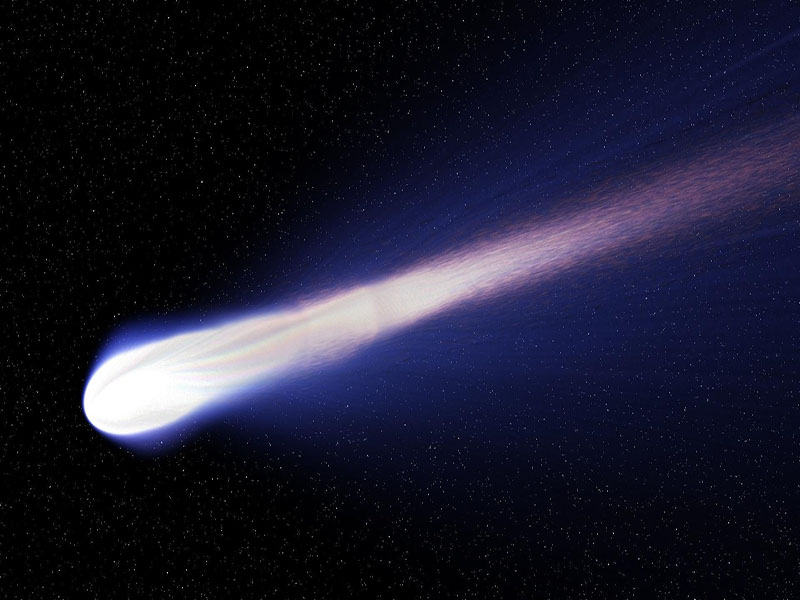
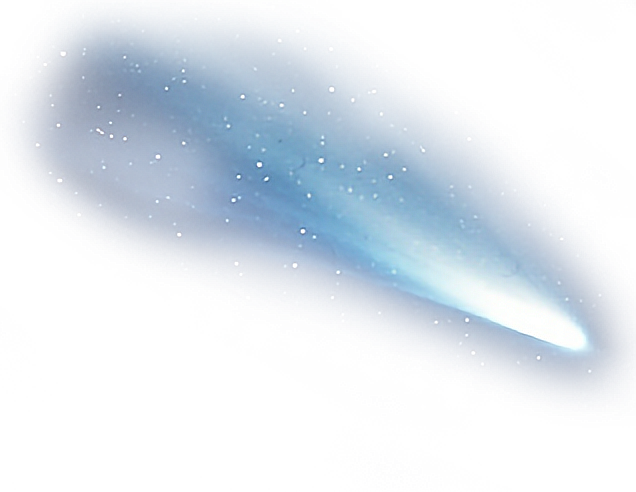
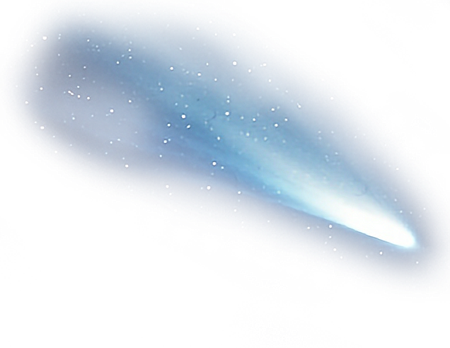

Кометы



Астероид — относительно небольшое небесное тело Солнечной системы, движущееся по орбите вокруг Солнца. Астероиды значительно уступают по массе и размерам планетам, имеют неправильную форму и не имеют атмосферы, хотя при этом и у них могут быть спутники. Входят в категорию малых тел Солнечной системы.
Итальянский астроном Джузеппе Пиацци 1 января 1801 г. с помощью телескопа разглядел новое небесное тело, похожее на звезду. Это тело и подобные ему были названы астероидами (от др.-греч. ἀστεροειδής — «подобный звезде», из ἀστήρ («астер») — «звезда» и εἶδος («оидос») — «вид, наружность, качество»).
Однако со звёздами астероиды не имеют ничего общего. Как и планеты, они не испускают собственного света и обращаются вокруг Солнца.
Диаметр астероидов составляет от одного до нескольких сотен километров. В настоящее время открыто более 700 тыс. малых планет. Большинство из них находится между орбитами Марса и Юпитера.
Происхождение астероидов до конца неизвестно. Возможно, это остатки разрушившейся планеты или остатки «строительного материала», из которого образовались планеты Солнечной системы.
Сначала астероидам давали исключительно женские имена, заимствуя их в мифологии. Потом это были просто любые женские имена, за некоторым исключением. Сейчас названия астероидов — это производные от названий стран и городов или имён и фамилий знаменитых людей.
Комета (от др.-греч. κομήτης («кометес») — волосатый, косматый) — небольшое небесное тело, обращающееся вокруг Солнца по весьма вытянутой орбите в виде конического сечения. При приближении к Солнцу комета образует кому и иногда хвост из газа и пыли. Кома — облако из пыли и газа, окружающее ядро кометы.
В прошлом появление яркой кометы пугало людей и считалось предвестником различных бед: болезней, войн, голода. За всю историю человечества наблюдалось около 3500 комет.
Комета состоит из ядра, головы (кома + ядро) и хвоста. Ядро кометы образовано изо льда, замёрзших газов и пыли. Диаметр ядра — от 1 до 20 км.
Когда комета приближается к Солнцу, ядро нагревается, происходит испарение и выделение с его поверхности газов и пыли. Комета становится ярче, увеличивается в размерах. У неё появляется голова, а затем один или два светящихся хвоста.
Со временем под действием солнечного света многие кометы полностью разрушаются. Их частички рассеиваются в космическом пространстве. Кометы, которые можно разглядеть невооружённым глазом, появляются очень редко. Учёные наблюдают за движением комет с помощью телескопа.
Самая известная комета — комета Галлея. Она подходит к Солнцу один раз в 76 лет. В это время она пролетает недалеко от Земли, и её можно наблюдать невооружённым глазом. Последний раз комету наблюдали в 1986 г. Следующее прохождение кометы ожидается 28 июля 2061 года.